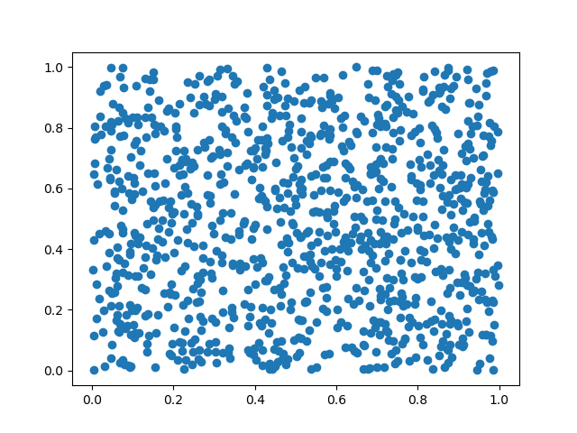

I’m working on a simulation that generates gigabytes of raw data. But I am a Physicist: I need plots, not tables! So I made a set of scripts in Python that parses all this data and generates about 50 plots.
It’s not a problem to generate lots of pdf’s with the plots. It’s not a problem to write the Python code to parse the data and generate the plots. Pandas makes our life easy to read data and Matplotlib has a nice interface to turn data in figures.
I have a code with a structure like this:
For every parameter alpha:
Read the relevant Data
Process the data
Make and save the plot
In Python words:
import matplotlib.pyplot as plt
import numpy as np
# Fixing random state for reproducibility
np.random.seed(19680801)
def read_data():
"""Generate fake data"""
x = np.random.random(1000)
y = np.random.random(1000)
return x, y
def process_data(x, y):
# pretend to do something with it
return x, y
def plot_data(x: list, y: list, fname: str):
fig = plt.figure()
ax = fig.add_subplot(111)
ax.plot(x, y, 'o')
#plt.show()
fig.savefig(f'plots/{fname}.png')
for alpha in range(50):
x, y = read_data()
x, y = process_data(x, y)
plot_data(x, y, str(alpha))
If I run this code, It will create 50 png’s in the folder plots/, similar to
this one:

So, what’s the problem here?
Try running the code!
$ python plot.py
plot.py:22: RuntimeWarning: More than 20 figures have been opened. Figures created through the pyplot interface (`matplotlib.pyplot.figure`) are retained until explicitly closed and may consume too much memory. (To control this warning, see the rcParam `figure.max_open_warning`).
fig = plt.figure()
This warning appears several times. And it is a warning, not an error: the
code will probably work fine.
It says and may consume too much memory. But how much is too much?
Let’s use the GNU time command to
discover the amount of memory used:
$ /usr/bin/time -f "%M" python bad-example.py
bad-example.py:22: RuntimeWarning: More than 20 figures have been opened.
Figures created through the pyplot interface (`matplotlib.pyplot.figure`) are
retained until explicitly closed and may consume too much memory. (To control
this warning, see the rcParam `figure.max_open_warning`).
fig = plt.figure()
... ommiting several repeated messages here
bad-example.py:22: RuntimeWarning: More than 20 figures have been opened.
Figures created through the pyplot interface (`matplotlib.pyplot.figure`) are
retained until explicitly closed and may consume too much memory. (To control
this warning, see the rcParam `figure.max_open_warning`).
fig = plt.figure()
182032
The last number is the peak memory usage, in kbytes. In this case: 182032 kbytes.
Now, let’s fix the warning. The problem is that we have too many figures
opened: we need to close them. The simplest way is to call plt.close(fig)
when the figure is not needed anymore:
import matplotlib.pyplot as plt
import numpy as np
# Fixing random state for reproducibility
np.random.seed(19680801)
def read_data():
"""Generate fake data"""
x = np.random.random(1000)
y = np.random.random(1000)
return x, y
def process_data(x, y):
# pretend to do something with it
return x, y
def plot_data(x: list, y: list, fname: str):
fig = plt.figure()
ax = fig.add_subplot(111)
ax.plot(x, y, 'o')
#plt.show()
fig.savefig(f'plots/{fname}.png')
plt.close(fig)
for alpha in range(50):
x, y = read_data()
x, y = process_data(x, y)
plot_data(x, y, str(alpha))
Now, let’s see how much memory it uses:
$ /usr/bin/time -f "%M" python good-example.py
106652

About 75000 kbytes saved!